The founder attached seven screenshots of unacceptable V7 states (categories A–G). Each category below shows the V7 defect reproduced at the same narrative moment in both builds — V7 left, V8 right — captured from the live prototypes at 1440×900 (mobile at 390×844). Nothing is mocked; every frame is a real screenshot of a running build.
AHero type shrinks into dead space
V7 cause: at the hero's exit the video shrank to a floating thumbnail in empty black, propped up by two scroll-instruction crutches ("keep going", "SCROLL"). V8 change: the media recedes with narrative purpose — it stays the dominant object as the aperture prepares its cut — and every scroll crutch is deleted. Result: no dead-space state exists at any scroll position.
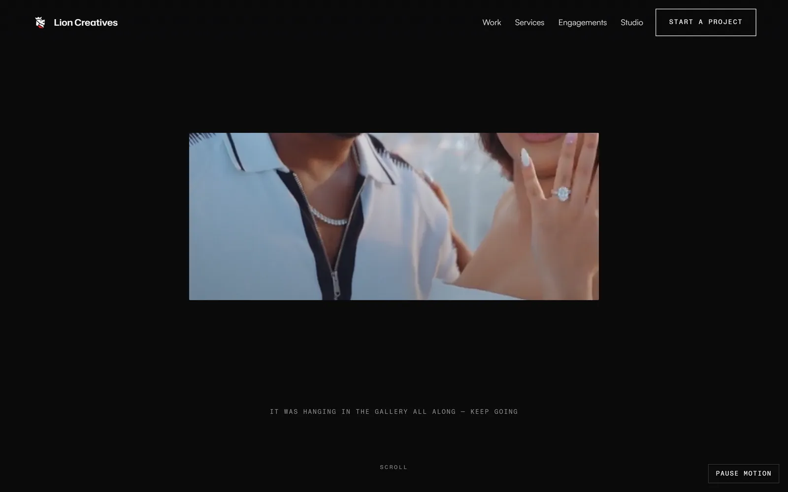
V7 · hero 82% — dead space + crutch copy
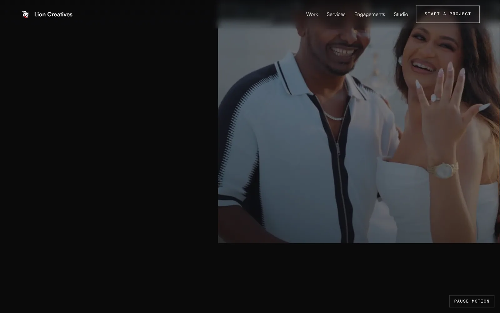
V8 · hero 82% — media recedes with purpose
BCommercial type collides with the work
V7 cause: an oversized headline ("Built for where people actually watch.") was composited across both vertical films. V8 change: the two films present sequentially with focus handoff; the section head is short, and every fact sits beneath its frame, never on it. Result: type and media never occupy the same pixels.
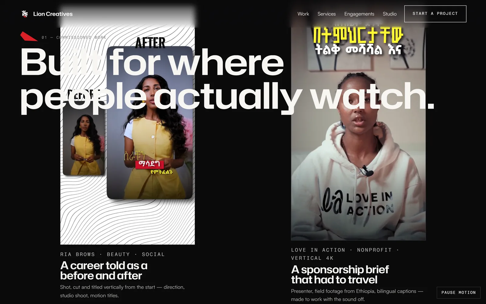
V7 · commercial 50% — headline across the films
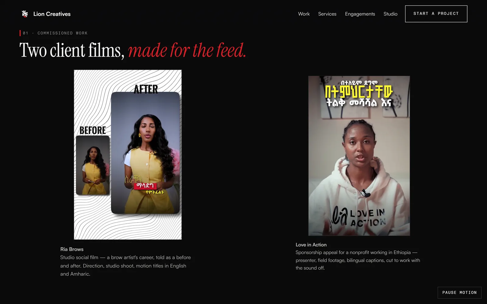
V8 · commercial 50% — facts under the frames
CDunamis screenshot pixelation
V7 cause: the digital scene started 26× inside a 1600px screenshot — a massive upscale that could only ever be mush. V8 change: the camera pushes IN (scale 0.3 → 1.0, never past 1) so the asset is never upscaled, and a native 3200×2000 capture was added to the srcset. Pixelation is now impossible by construction. Result: the platform reads sharp at every scroll position.
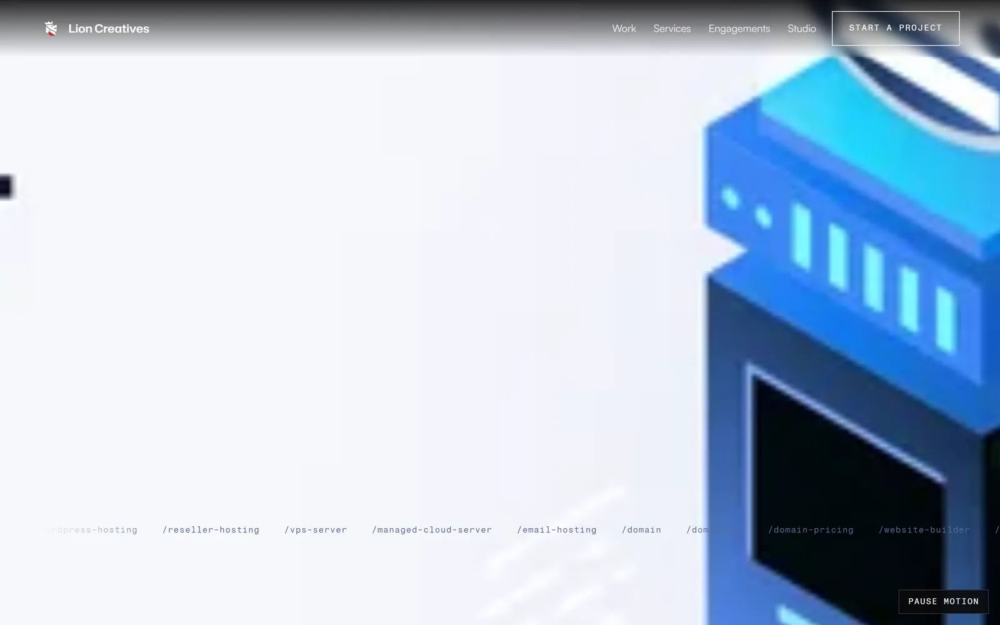
V7 · tech 15% — 26× upscale, unreadable
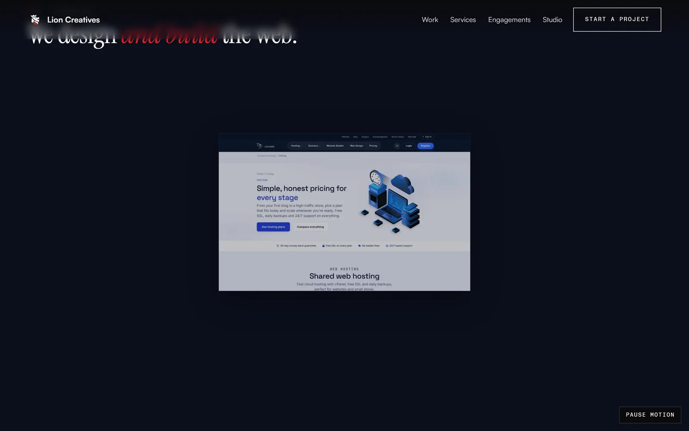
V8 · tech 15% — push-in ≤ 1×, native 3200w asset
DWeak Dunamis mobile presentation
V7 cause: on a phone the technology scene was a wall of text — the product never appeared on screen at the moment that mattered, and the available captures were low-resolution. V8 change: fresh deliberate captures at 390×780 CSS px, device-pixel-ratio 3 (1170×2340 native), composed so the platform itself is the evidence. Result: the phone view leads with a crisp product screen.
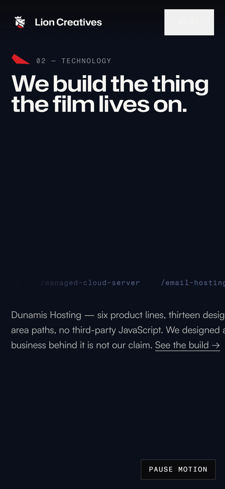
V7 · 390×844 — text wall, no productV8 · 390×844 — DPR-3 capture, product first
EPhotography type over portraits
V7 cause: "Stillness is also directed." floated across the drifting photographs — across faces. V8 change: the heading lives in its own band above the field; the drift volume is inset below it and drift rates were slowed so no frame can reach the heading. Result: photographs and type never overlap.
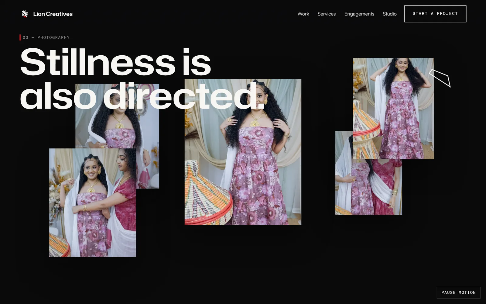
V7 · photo 50% — type across the pictures
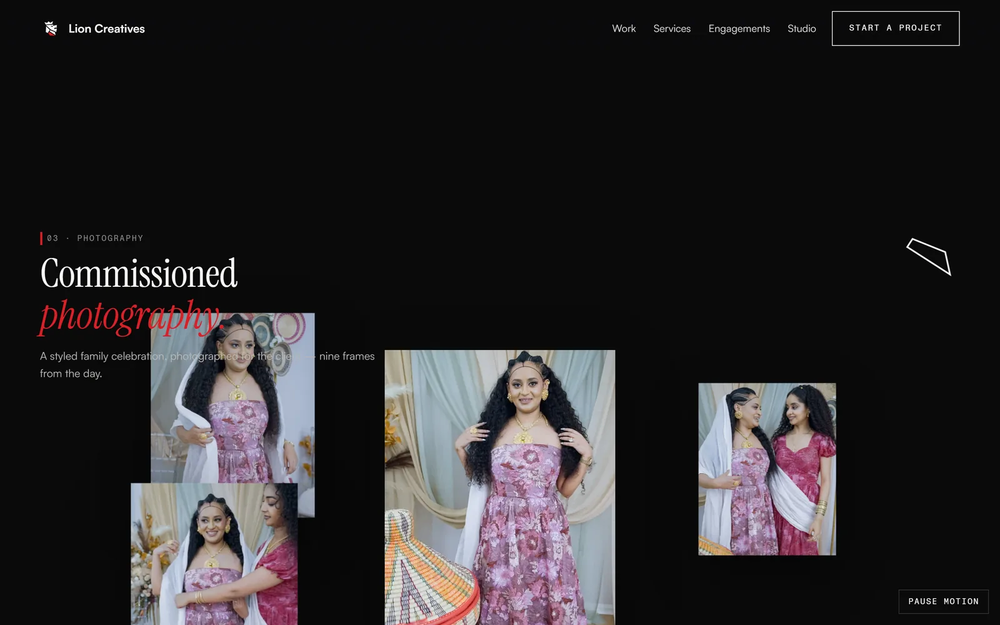
V8 · photo 50% — heading band, pictures clear
FFilm type over the frame
V7 cause: "One take. No reshoots. Twice." was set across the film — across the bride. V8 change: the film plays clean inside real letterbox bars and the title moved ONTO the lower bar. Fixing this exposed a second latent bug found during this regression pass: the bar-anchored title was rendering dark-on-dark and being painted over by the bar (a stacking-context burial) — both are fixed and now guarded by an automated test. Result: the frame is never written on; the title reads white on the bar.
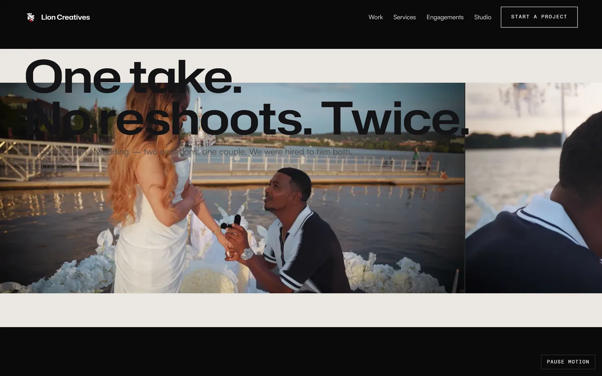
V7 · cinema 30% — type across the bride
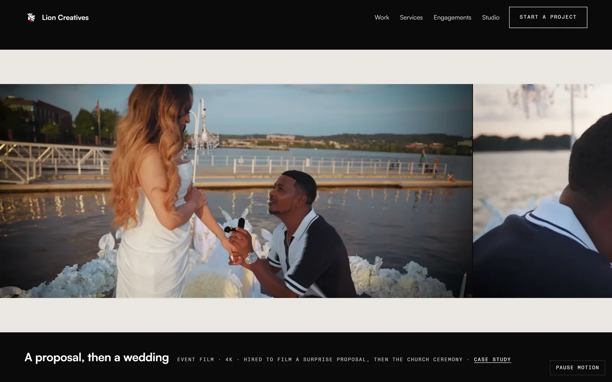
V8 · cinema 30% — frame clean, bars real
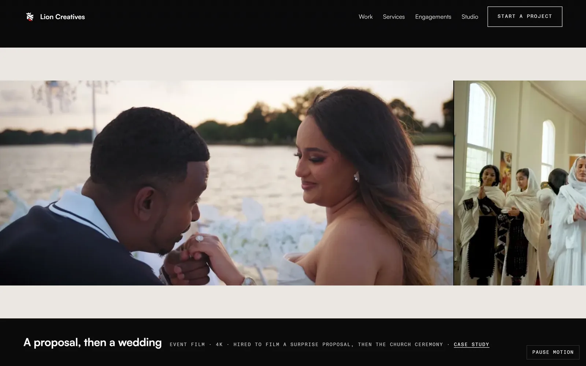
✓ V8 · cinema 55% — the title lives ON the bar: "A proposal, then a wedding · Event film · 4K"
GThe mark looks broken
V7 cause: the loader flew the five planes in from scattered depth positions — mid-flight the logo read as malformed — and the finale scattered them again with rotation. V8 change: the V1 loader treatment was recovered verbatim from git history (commit 34d6bd0): planes assemble in place, staggered, with a real progress bar and a clean curtain exit. The finale now begins recognisable, breathes apart by a small deliberate amount with no rotation, and returns to the exact canonical assembly, which holds. Result: the mark is never scattered, rotated, or partially assembled on screen.
V8 · finale 55% — deliberate breath, exact assembly
Brand-mark integrity is additionally guarded by the loader test (assembly must complete and leave the accessibility tree) and by the nav, loader and finale all carrying byte-identical canonical point sets for the five polygons (verified: each polygon string appears unchanged in every instance).